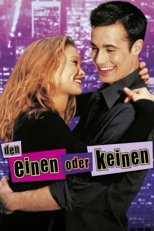

#2295 Den Einen oder keinen
Alternativ: Down to You
 
 IMDB-Wertung: 4.9 / 10
IMDB-Wertung: 4.9 / 10  Metascore: 13
Metascore: 13 
Us-Amerikanische Liebeskomödie von Kris Isacsson. Alfred (Freddie Prinze Jr.) und Imogen (Julia Stiles) sind unendlich verliebt ineinander. Nach einiger Zeit stellt sich jedoch der Alltag ein und als Imogen in eine andere Stadt zieht, verläuft sich die Beziehung. Alfred merkt jedoch schnell, was ihm alles fehlt und macht sich auf die Suche nach seiner grossen Liebe.
Jahr: 2000
Dauer: 91 Minuten
FSK: 12
Land: USA Studio: MiramaxTonspuren:
Untertitel:
Auflösung: 1080p (1920x1040) Größe: 6830 MB
Genre: Drama, Komödie, Liebe
Regisseur: Kris Isacsson
Drehbuch: Kris Isacsson
Soundtrack: Edmund Choi
Darsteller:
 Freddie Prinze Jr. als Al Connelly
Freddie Prinze Jr. als Al Connelly Julia Stiles als Imogen
Julia Stiles als Imogen Selma Blair als Cyrus
Selma Blair als Cyrus Shawn Hatosy als Eddie Hicks
Shawn Hatosy als Eddie Hicks Zak Orth als Monk Jablonski
Zak Orth als Monk Jablonski Ashton Kutcher als Jim Morrison
Ashton Kutcher als Jim Morrison Rosario Dawson als Lana
Rosario Dawson als Lana Henry Winkler als Chef Ray
Henry Winkler als Chef Ray- Lucie Arnaz als Judy Connelly
- Lauren German als Lovestruck Woman
- Zay Harding als Lovestruck Man
- Amanda Barfield als Faith Keenan
- Granger Green als Haley Heller
 Bradley Pierce als Ricky James
Bradley Pierce als Ricky James Lola Glaudini als Parolee
Lola Glaudini als Parolee- Mary Wigmore als Pearly Whites
 Alexia Landeau als Cousin Maeva
Alexia Landeau als Cousin Maeva Adam Carolla als 'The Man Show' Host
Adam Carolla als 'The Man Show' Host Jimmy Kimmel als 'The Man Show' Host
Jimmy Kimmel als 'The Man Show' Host- Jason Bailey als Angry Audience Member
 Susan Blommaert als Psychologist
Susan Blommaert als Psychologist Frank Wood als Doctor
Frank Wood als Doctor- Joanna Adler als Piercing Woman
 Mark Blum als The Interviewer
Mark Blum als The Interviewer- Michael J. Conti als Swat Team
- Jim Hechim als TV Crew Camera Asst. , uncredited
- Jane Scarlett als Party Goer , uncredited
- Chloe Hunter als Megan Brodski
- Jed Rhein als Gabe Stiano
- Joseff Stevenson als Ted McGurran
- Elizabeth Levin als Carbs Girl
- Robin Nance als Daddy's Girl
- Caroline Ambrose als Al's First Kiss
- Jennifer Albano als Emma
- Chris Desmond als Man with Emma
- Julian Michael Caiazzo als Young Al - 5 Yrs
- Jerry Careccio als Young Al - 12 Yrs
- Chloe Beardman als Young Imogen - 11 Yrs
- Mimi Langeland als Leather Woman
- Elizabeth Page als Stage Manager
- David Logan als Suburban Husband
- Joanna Myers als Suburban Wife
- Richard Galella als Swat Team
- Ian Dite als Guy at Party , uncredited
- Craig McCoy als Supermarket Boy , uncredited
- Exile Ramirez als Party Goer , uncredited
- Robert Reins als Bernardo Fabrizi , uncredited
- Ben Ryan als Beer Dude , uncredited
Datei: X:\2-Dilogie(A-F)\Eine - Keine\Den Einen oder keinen (2000, FSK12, 1920x1040).mkv seit 26.10.2015
Festplatte: HD Collection-2(A-Z)-3(A-M)
 Alle Filme aus Gruppe '2-Dilogie(A-F)\Eine - Keine'
Alle Filme aus Gruppe '2-Dilogie(A-F)\Eine - Keine'